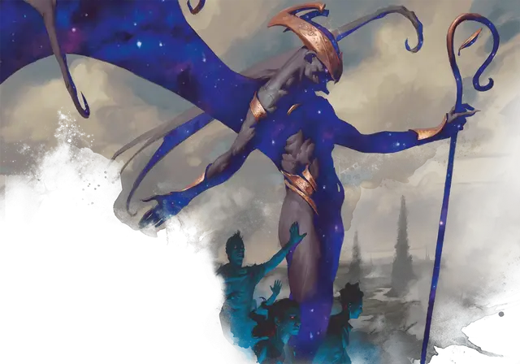

Пастырь кошмаров
Nightmare Shepherd
Большое Исчадие, законно-злое

Класс Доспеха 18 (природный доспех)
Хиты 133 (14к10 + 56)
Скорость 30 футов, летая 60 футов
| мод | спас | ||
|---|---|---|---|
| СИЛ | 19 | +4 | +4 |
| ЛОВ | 15 | +2 | +2 |
| ТЕЛ | 18 | +4 | +8 |
| мод | спас | ||
|---|---|---|---|
| ИНТ | 14 | +2 | +2 |
| МДР | 17 | +3 | +7 |
| ХАР | 20 | +5 | +5 |
Навыки Восприятие +7, Магия +6, Обман +9, Убеждение +9
Сопротивление урону некротическая энергия, холод
Иммунитет к урону яд
Иммунитет к состояниям отравление
Чувства тёмное зрение 120 футов, пассивное Восприятие 17
Языки Общий, Бездны, Инфернальный
Опасность 11 (7200 опыта)
Бонус мастерства +4
Особенности
Аура кошмаров. Нежить в пределах 30 футов от пастыря получает бонус +5 к броскам атаки и урона. Когда любое другое существо, не являющееся нежитью или конструктом, начинает свой ход в пределах 30 футов от пастыря, это существо должно совершить спасбросок Мудрости Сл 17, иначе получит 11 (2к10) урона психической энергией.
Врождённое колдовство. Базовой характеристикой пастыря является Харизма (Сл спасброска от заклинания 17). Он может накладывать следующие заклинания, не нуждаясь в материальных компонентах:
• 1/день каждое: смятение [confusion], рассеивание магии [dispel magic], удержание личности [hold person], внушение [suggestion].
Сопротивление магии. Пастырь совершает с преимуществом спасброски от заклинаний и прочих магических эффектов.
Действия
Мультиатака. Пастырь кошмаров совершает две атаки: одну своими Когтями и одну Посохом.
Когти. . Рукопашная атака оружием: +8 к попаданию, досягаемость 5 футов, одна цель. Попадание: 13 (2к8 + 4) рубящего урона плюс 16 (3к10) урона некротической энергией.
Посох. . Рукопашная атака оружием: +8 к попаданию, досягаемость 5 футов, одна цель. Попадание: 11 (2к6 + 4) дробящего урона или 13 (2к8 + 4) дробящего урона если используется двумя руками, плюс 26 (4к12) урона психической энергией.
Стадо Подземного царства (Перезаряжается после короткого или продолжительного отдыха). Пастырь вытягивает искаженные души из Подземного царства; 1к6 теней [shadow] (без слабости на солнечном свете) возникают в незанятых пространствах в пределах 20 футов от пастыря. Тени действуют сразу после пастыря в той же инициативе и сражаются, пока не будут уничтожены. Они исчезают, когда пастырь умирает.
Описание
Пастырь кошмаров - это изможденное, пепельно-серое исчадие с кожистыми крыльями. У него есть пастуший посох, которым он управляет стадом блуждающих мертвецов, которых он истязает и иногда питается.
Надзиратели Подземного царства. Пастыри кошмаров — это нюкторождённые, взятые из божественной энергии Эреба, чтобы быть проводниками мертвых, направляя их в одну из пяти палат Подземного царства, где они проведут свою мрачную вечность. Они охотятся на души, которые покидают свои положенные места в Подземном царстве.
Демоны тероса
Некоторые мерзкие души не могут расстаться с той жалкой жизнью, которая у них была. Будучи презренными при жизни, эти духи быстрее умирают. Худшие из этих ненавистных мертвецов, пережив века горечи, постепенно превращаются в демонов, мучителей Подземного царства. Жители Тероса знают этих исчадий как демонов.
Бессмертная природа. Демонам Тероса не нужны еда, питьё или сон.